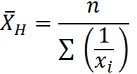
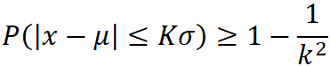

CFA Textbook
--------------------
Study Session 2 Quantitative Methods : Basic
Concepts
--------------------
Reading 8 Statistical Concepts and Market
Returns
--------------------
Summary
- A population is defined as all members of a specified group.
A sample is a subset of a population.
- A parameter is any descriptive measure of a population. A
sample statistic (statistic, for short) is a quantity computed from
or used to describe a sample.
- Data measurements are taken using one of four major scales:
nominal, ordinal, interval, or ratio. Nominal scales categorize data
but do not rank them. Ordinal scales sort data into categories that
are ordered with respect to some characteristic. Interval scales
provide not only ranking but also assurance that the differences
between scale values are equal. Ratio scales have all the
characteristics of interval scales as well as a true zero point as
the origin. The scale on which data are measured determines the type
of analysis that can be performed on the data.
- A frequency distribution is a tabular display of data
summarized into a relatively small number of intervals. Frequency
distributions permit us to evaluate how data are distributed.
- The relative frequency of observations in an interval is the
number of observations in the interval divided by the total number of
observations. The cumulative relative frequency cumulates (adds up)
the relative frequencies as we move from the first interval to the
last, thus giving the fraction of the observations that are less than
the upper limit of each interval.
- A histogram is a bar chart of data that have been grouped
into a frequency distribution. A frequency polygon is a graph of
frequency distributions obtained by drawing straight lines joining
successive points representing the class frequencies.
- Sample statistics such as measures of central tendency,
measures of dispersion, skewness, and kurtosis help with investment
analysis, particularly in making probabilistic statements about
returns.
- Measures of central tendency specify where data are centered
and include the (arithmetic) mean, median, and mode (most frequently
occurring value). The mean is the sum of the observations divided by
the number of observations. The median is the value of the middle
item (or the mean of the values of the two middle items) when the
items in a set are sorted into ascending or descending order. The
mean is the most frequently used measure of central tendency. The
median is not influenced by extreme values and is most useful in the
case of skewed distributions. The mode is the only measure of central
tendency that can be used with nominal data.
- A portfolio’s return is a weighted mean return computed from
the returns on the individual assets, where the weight applied to
each asset’s return is the fraction of the portfolio invested in that
asset.
- The geometric mean. The geometric mean is especially
important in reporting compound growth rates for time series data.
- Quantiles such as the median, quartiles, quintiles, deciles,
and percentiles are location parameters that divide a distribution
into halves, quarters, fifths, tenths, and hundredths, respectively.
- Dispersion measures such as the variance, standard deviation,
and mean absolute deviation (MAD) describe the variability of
outcomes around the arithmetic mean.
- Range is defined as the maximum value minus the minimum
value. Range has only a limited scope because it uses information
from only two observations.
- MAD for a sample is ∑(|X-X|)/n.
- The variance is the average of the squared deviations around
the mean, and the standard deviation is the positive square root of
variance. In computing sample variance (s2) and sample
standard deviation, the average squared deviation is computed using a
divisor equal to the sample size minus 1.
- The semivariance is the average squared deviation below the
mean; semideviation is the positive square root of semivariance.
Target semivariance is the average squared deviation below a target
level; target semideviation is its positive square root. All these
measures quantify downside risk.
- According to Chebyshev’s inequality, the proportion of the
observations within k standard deviations of the arithmetic mean is
at least 1 − 1/k2 for all k > 1. Chebyshev’s inequality
permits us to make probabilistic statements about the proportion of
observations within various intervals around the mean for any
distribution with finite variance. As a result of Chebyshev’s
inequality, a two-standard-deviation interval around the mean must
contain at least 75 percent of the observations, and a
three-standard-deviation interval around the mean must contain at
least 89 percent of the observations, no matter how the data are
distributed.
- The coefficient of variation, CV, is the ratio of the
standard deviation of a set of observations to their mean value. A
scale-free measure of relative dispersion, by expressing the
magnitude of variation among observations relative to their average
size, the CV permits direct comparisons of dispersion across
different data sets.
- The Sharpe ratio for a portfolio, p, based on historical
returns, is defined as Sh = (Rp − RF) / sp , where Rp is the mean
return to the portfolio, RF
is the mean return to a risk-free and asset, and sp is the
standard deviation of return on the portfolio.
- Skew describes the degree to which a distribution is not
symmetric about its mean. A return distribution with positive
skewness has frequent small losses and a few extreme gains. A return
distribution with negative skewness has frequent small gains and a
few extreme losses. Zero skewness indicates a symmetric distribution
of returns.
- Kurtosis measures the peakedness of a distribution and
provides information about the probability of extreme outcomes. A
distribution that is more peaked than the normal distribution is
called leptokurtic; a distribution that is less peaked than the
normal distribution is called platykurtic; and a distribution
identical to the normal distribution in this respect is called
mesokurtic. The calculation for kurtosis involves finding the average
of deviations from the mean raised to the fourth power and then
standardizing that average by the standard deviation raised to the
fourth power. Excess kurtosis is kurtosis minus 3, the value of
kurtosis for all normal distributions.
中文手册整理
- 描述性统计量 vs 推断性统计量
- 总体和样本
- 名义分类 vs 排序分类 vs 区间分类 vs 比率分类
- 总体参数（population parameter） vs 样本统计量（sample statistic）
- 频率分布（frequency distribution） vs 柱状图（histogram） vs
折线图（polygon）
- 调和平均数
- 中心趋势：众数（mode）；中位数（median）；分位数（quantile）：4分位数（quartile），5分位数（quintile），10分位数（deciles），百分位数（percentile）
- 离散程度：极差（range）；均值绝对差（mean absolute
deviation，MAD）；方差（variance）；标准差（standard deviation）
- 切比雪夫不等式
- 变异系数CV=s/X
- 夏普比率，超额收益率/资产组合收益率标准差
- 偏度(skewed) vs 峰度(kurtosis)
- 左偏，均值 < 中位数 < 众数 右偏，均值 > 中位数 > 众数
- 正态分布，峰度=3，超额峰度=0；高峰（lepto kurtic），低峰（platy kurtic）
--------------------
Next Reading